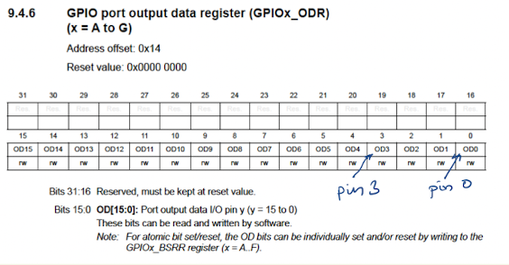
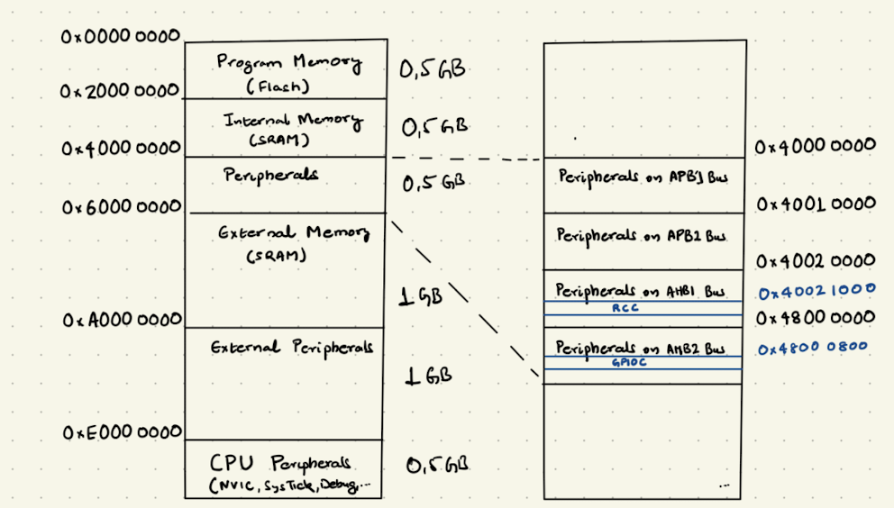

3.3. BareMetal I/O#
3.3.1. Let us go bare-metal!#
Warning
You should have no fear in reading schematics and finding relevant needle information in datasheet stack.
Unlike in high-level languages like micropython, where lot of system level functionality is already provided. In a low-level language like C, one has better performance through direct access to hardware. This makes C, the preferred language for programming in embedded systems. It not only provides high-level abstractions and portability, but is also closer to machine. In this chapter, we will learn the following concepts:
Memory map
Registers
Pointers in C
Bit Masking
Standard library
3.3.2. Registers#
Apart from hardware registers in the CPU, the microcontroller has lots of registers in peripherals like GPIO, Timers, … available to programmer for configuring and controlling certain function in them. This enables interaction with external devices from LEDs to Camera sensors. For, the exercise of writing a program to starting the led chaser application on button press event and switching off led chaser on second button press. The following peripherals and some of their registers would need to be programmed in an STM32 microcontroller.
RCC: Reset and Clock Controller
AHB2ENR: turn on the clock for the needed peripherals in application.
GPIO: General Purpose Input and Output
MODER: set the direction of microcontroller pins (e.g. input mode for push-buttons, output mode for LEDs)
IDR: For reading the peripheral data (e.g. push-button status)
ODR: For writing the peripheral data (e.g. switch the LEDs on or off)
PUPDR: In case there are no external pull-up or pull-down registers for the input pins. One can enable or disable, the internal pull-up and pull-down resistors in GPIO Peripherals.
In order to program the registers correctly, one needs to look into datasheet of the microcontroller. For lighting up an LED, the microcontroller pin must be set to low voltage. This is done by using a GPIO peripheral. The reference manual of the microcontroller contains a chapter on GPIO describing its main features, functionality, and registers. GPIO peripheral has multiple instances (Port A to G) and each port has 16 pins. The GPIO output data register (ODR) controls the voltage level of the microcontroller pins. The bit 0 and bit 3 in ODR register sets the voltage level of pin 0 and pin 3 respectively. Therefore, to light up an LED connected to port C and pin 3, the bit 3 must be set to 0. The reset value is the initial value of the register when the system is powered up. What does this mean for our system? One can write and read the values in this register. 
3.3.3. Memory Map#
Unlike hardware registers in CPU, the peripheral registers have a address which allows the software to control peripheral by reading or writing from specific memory locations. This concept of memory-mapped I/O is used in all modern microcontrollers. An address is a memory location. In our microcontroller, the address is 32-bit and is represented as unsigned integer (uint32_t in C). Here, the 4GB address space is divided into regions: program memory (internal flash), internal RAM, peripherals, external RAM, external peripherals, and system region. 
From the STM32 reference manual, we see that the peripheral region starts at 0x40000000. The Reset and Clock Control (RCC) peripheral is connected to the AHB1 Bus and starts at the Address 0x40021000.Similarly, the GPIOC peripheral starts at the address 0x48000800. The address offset of the GPIOC output data register is 0x14, Therefore one can calculate the address of the register as 0x48000800 + 0x14 = 0x48000814. Using C, one can load of store values (4 bytes) into this register by using the address. C pointers is a great technique for accessing the memory address.
volatile uint32_t *const gpioc_out = (uint32_t *) 0x48000814;
*gpio_cout =0x4; //set pin C2 to 1
The above line of code will set the microcontroller pin ‘C2’ to 1. Thus, turning off the LED.
3.3.4. C#
When do we use the volatile keyword in C? This is a standard question in embedded systems programming interview. This section will give a quick recap of the C concepts needed for microcontroller programming. The variables in C are named storage locations in memory declared with a specific data type (e.g. uint32_t). For a beginner, the following code looks cryptic with arrows and tildes.
GPIOC->MODER &= ~(1 << 2);
C pointers and Bit masking are the most concept for embedded systems programming. A pointer is a variable that holds a memory address as their values. They are declared using the ‘*’ operator and datatype of the values they hold. As the memory address in cortex microcontroller system is 32-bit, therefore the datatype is uint32_t. The variable gpioc_out is initialized to point to memory address of the output data register for GPIOC (i.e. 0x48000814) . This pointer can be used to read or write data to the register.
uint32_t *gpioc_out = (uint32_t *) 0x48000814;
*gpio_cout |= (1 << 2);
The pointers are often used to access data by offset in arrays or related data grouped together in struct field. Although, we need only 3 of the GPIO registers. The task of looking up the offsets and calculating the address is repetitive and error-prone. Therefore, a ‘struct gpio’ declaration defines a structure that contains all registers associated with GPIO Peripheral in the same order as in datasheet for the correct offsets.
struct gpio {
volatile uint32_t MODER; // GPIO port mode register
volatile uint32_t OTYPER; // GPIO port output type register
volatile uint32_t OSPEEDR; // GPIO port output speed register
volatile uint32_t PUPDR; // GPIO port pull-up/pull-down register
volatile uint32_t IDR; // GPIO port input data register
volatile uint32_t ODR; // GPIO port output data register
volatile uint32_t BSRR; // GPIO port bit set/reset register
volatile uint32_t LCKR; // GPIO port configuration lock register
volatile uint32_t AFR[2]; // GPIO alternate function low and high register
};
#define gpioC ((struct gpio *)0x48000800)
The macro defines the pointer gpioC to base address of the GPIOC Peripheral. This allows easy access to the registers.
void toggle_led(uint32_t pos){
gpioC->ODR ^= (1 << LED_POS);
sleep(DELAY);
}
The -> operator is used to access the members of a struct through a pointer to that struct.
bit masking
arrays
structs
volatile
These variables are accessed with load and store assembler instructions. The logical and arithmetic expressions are implemented using ALU instructions. The control flow using while and for loops are implemented using branch instructions.